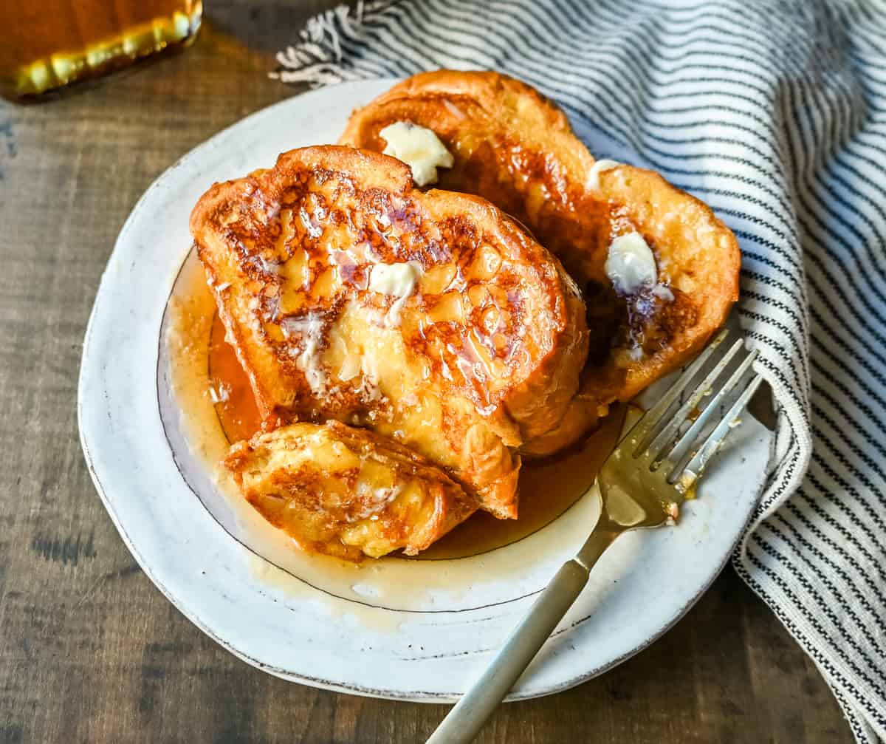

French Toast
HOME

Description
French toast is certainly an all time favorite comfort food, and a perfect
way to start the day!
Fluffy, and full of protein, smother it in syrup or peanut butter, or load
it up with your favorite fresh fruit!
Ingredients
- 2/3 cup of milk
- 2 large eggs
- 1 teaspoon vanilla extract
- 1/4 teaspoon ground cinnamon
- salt to taste
- 6 thick slices of bread (brioche is best)
- 1 tablespoon unsalted butter
Directions
- Gather all ingredients
-
Whisk milk, eggs, vanilla, cinnomon, and salt together in a shallow bowl
until combined and smooth.
-
Lightly butter a griddle or skillet and heat over medium-high heat. Soak
each slice of bread in eggy mixture for about 5 to 10 seconds per side.
This allows it to absorb the mixture without becoming overly soggy.
-
Transfer to the hot skillet. Cook until golden brown and slightly crisp,
3-4 minutes per side.
- Serve hot, add your favorite toppings, and enjoy!